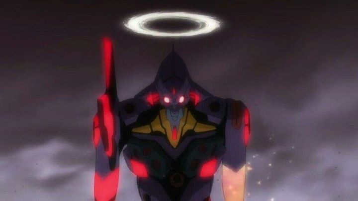

The "Rebuild of Evangelion" films were my first introduction to the infamous franchise. I saw the first film, "Evangelion 1.01," and thought it was a good and interesting sci-fi flick. When the second film ("Evangelion 2.22 - You Can (Not) Advance") was released... well, I wasn't actively excited for it, but I intended to watch it when the home video release in America was available. And I'm glad I did; not knowing what the final two films of the tetralogy would be like, "2.22" alone made it worth the effort to invest in this new film series. I don't think I've seen another anime film quite like it. It better resembles the concept of show-stopping summer blockbuster than any other anime.Set not long after the end of "1.11," Shinji Ikari and Rei are still pilots of the Eva robots in Japan, fighting against the never-ending Angels that seek to destroy what's left of humanity. Other countries are becoming more involved: the pilot of Unit 02 has joined them, a fiesty redhead named Asuka from Gemany, as well as a rogue pilot named Mari (also intent on destroying the Angels, she seems to work independently, solely for the pleasure of piloting the giant weapons). Asuka's appearance makes things more chaotic, but not in a dangerous way. For the most part, the kids have gotten used to their work in NERV. Shinji even visits his mother's grave with his father Gendo, and it seems the two might actually be beginning to bond...... but about two-thirds into the movie, things ramp up for the worse, and quickly. To say exactly what happens is a bit of a spoiler, but it results in not just one, but two major cliffhangers at the end. But when I first saw this movie (on DVD, which was rather well-mastered by Funimation), I didn't sit back to prepare to wait years for the next sequel. Instead, I got up, went to the bathroom, ate some toast, and immediately started the film again. I don't recall ever being so excited to watch a movie twice in a row, in the same day no less... that's how jam-packed and satisfying the movie is. This is part of a larger rewrite of the original "Neon Genesis Evangelion" series. But if you were already a fan of the original, be prepared: this is (not) like what you remember. Yes, many scenes are taken from the show (roughly from episode 7 to episode 23), but the order (and the characters involved) are different. The ending and its implications are drastically different. From this movie onward, we can assume everything has changed, and that the third movie will introduce entirely new material that leads to the new ending director Hideaki Anno intended.Most of those changes are for the better. There's a lot of content in "2.22," but it doesn't feel rushed. In the original show, there was a lot of unnecessary filler material, all of which is removed for the sake of the movie. It's more efficient and more enjoyable to watch. The characters themselves are better portrayed. Gendo Ikari has never been easier to understand or more sympathetic than he is in this film. Shinji's actions make him feel more like a genuine badass hero than ever before. Some of Asuka's more frustrating characteristics have been removed from her character this time. And what about new character Mari? She effectively replaces "the Fourth child" in the series (who originally didn't really have much to do anyway). Yes, she happens to be a cute girl, making Shinji the lone male in the makings of a minature underage harem. This was likely an intentional commercial decision, as a bit more comedy and fanservice abounds for all the girls (sometimes disturbing, since the kids are only 14 years of age... but for a 14-year-old viewer and target demographic, great!). But even if only a marketing gimmick, Mari is a breath of fresh air that almost steals the show. Unlike the other pilots, she actively WANTS to be in an Eva, representing the power-fantasy idealologies the audience likely has, brilliantly represented in a great opening setpiece.  Speaking of setpieces, the film has several separate action scenes. Early on, these are dynamic and exciting, great crowd-pleasers for an audience. Like the second half of the series, the movie's violence is a lot darker than the first film: the organically-inspired Eva robots get ripped apart, eaten alive, and headshot, all in visually disturbing fashion. Not having seen the original series at the time, "2.22" had some of the most disturbing visuals I had ever seen when I watched it as a teenager. It certainly makes one view "Evangelion" differently than after "1.11." Are all of the events and their causes explanable? In "Evangelion?" Of course not. But if logic can be briefly ignored, the character developments and exciting/tragic scenes they are forced in is a great example of a strong story that appears smart to a general audience. I can't imagine anyone walking away from "2.22" without being impressed, and without being sold on why the franchise is so iconic today. And as a reminder, it improves on the original series in so many ways, that I would be happy to throw the old show away and claim this as the new, true story.Visually, things have also greatly improved, even from "1.11." While the first movie heavily relied on recreating shots from the original series, "2.22" feels like the reigns have been let go, allowing it to take full advantage of new Angel designs and new framing of character conversations. The characters and their exposition may be better animated, but it might not look all that impressive on its own... the spectacle comes from those many action scenes, especially during the thrilling climax near the end. 3D computer animation is used a bit more liberally, but not too much so, typically only to better showcase the Angels and the Evas in motion. And their animation is spectacular in these scenes, arguably the best the franchise has ever looked, and a showcase that represents the best hybrid of old and new animation techniques.The audio mixes both classic themes, thrilling orchestral battle scores, and multiple vocal J-POP lullabies during particularly tragic moments. Those J-POP songs might not quite replace "A Cruel Angel's Thesis" fromt he original show, but they do come close. The English dub is stellar too, especially given what the characters have to go through. The quality of the audio overall helps compliment what the story, pacing and visuals strive to do: make an incredible cinematic experience for a wide audience. A wide "adult" audience, that likes violence and pseudo-religous metaphors. But hey, who doesn't like a good action movie?Telling a story in four parts seems to be a common Japanese thing, where the first part is the introduction, the second the exciting rise, the third the downfall, and the fourth the resolution. That would make it easy to predict the the rest of the "Rebuild of Evangelion" films won't be as entertaining to watch as "Evangelion 2.22 - You Can (Not) Advance." But I don't care. This is a prime example of "watching something to get to the good part," and it is worth every moment. Enjoy it.
- "Ani" More reviews can be found at : https://2danicritic.github.io/ Previous review: review_Evangelion_1.11_-_You_Are_(Not)_Alone Next review: review_Evangelion_3.33_-_You_Can_(Not)_Redo